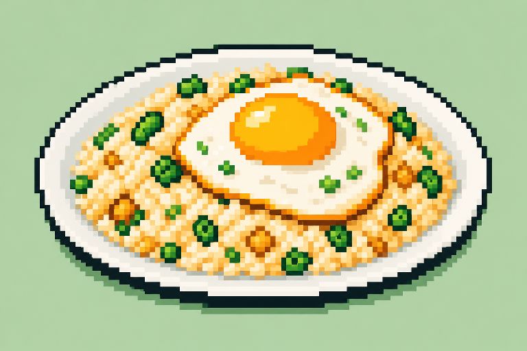

Рис із яйцем без олії
20 хв · 2 порції · плита · легко приготувати

Є вдома
- Рис — 150 г
- Яйця — 2 шт.
- Цибуля — 1 шт.
- Сіль — за смаком
Як приготувати
-
Підготуй рис
Промий та відвари до готовності.
-
Приготуй цибулю
Наріж та припусти з невеликою кількістю води.
-
Додай яйця
Перемішуй, поки яйця не приготуються.
-
З’єднай усе
Додай рис, посоли та прогрій разом.